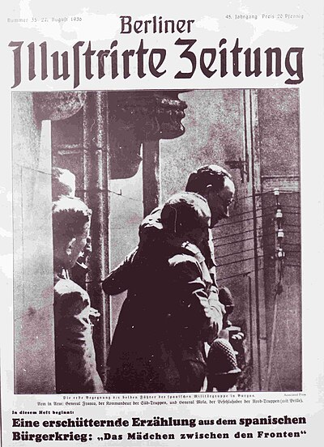
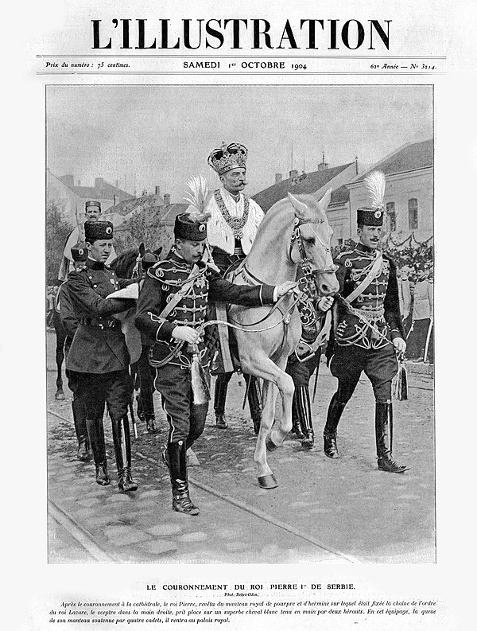
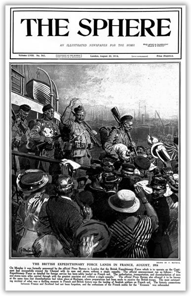

➸ The Changing Role of Photos and Illustrations
The pre-communist era is crucial for understanding Romania's cultural
evolution, as it reveals the dynamic interplay between tradition and
modernity. Although publications from this period are poorly documented
and preserved, the available magazines demonstrate a desire for
modernization. They played a vital role in modernizing public discourse by
introducing European trends and styles into Romanian culture, particularly
through their modern design, photography, and journalistic approach.
The printing processes available at the time, letterpress, lithography,
and early offset, presented limitations in the production of these
magazines.
"Patrimoniul Istoric Si Arhitectural Sibiu, Romania." 2020.
Patrimoniul Istoric Si Arhitectural Sibiu, Romania. 2020.
htts://patrimoniu.sibiu.ro/istorie/detaliu/74.
Even though most printing was done in black and white, these constraints
fostered innovative approaches to typography, illustration, and image
composition.
My research, though limited, will focus on a series of magazines from the
periodical publication Ilustrațiunea Română (Romanian Illustration). While
precise information about its founding is scarce, references trace its
origins to 1929. Issue 1(1929) includes an introductory editorial stating
the publication's goal
"We present the first issue of "Romanian Illustration" with the belief
that we are giving the general public what it has been waiting for a
long long time and what it needs: an illustrated magazine in the broad
and Western sense of the word, a magazine of photographic reportage and
illustrated documentation that, despite all material difficulties, can
be within the reach of the general public…
Ilustrațiunea Română. 1929. "CĂTRE CITITORI," 1929.
"
(author's translation). Examining its content suggests that
the magazine aimed to popularize, and bring readers closer to,
contemporary events, culture, and society. Emerging in a post-World War I
market, it capitalized on increasing urbanization, literacy growth, and a
budding middle class eager for news and entertainment. It advertised
global developments, reflecting a society eager for transformation. The
excursions to Paris, Vienna, Venice, and Milan were always found on one of
the pages, with tourism and travel being frequently mentioned topics. The
magazine covered both national and international news, political
developments, and cultural events. Art and entertainment such as theatre
premieres, film stars, and notable artists were usually mentioned, as well
as the fashion column highlighting the latest trends drawing attention to
local and foreign designers.

Fig 1. Ilustrațiunea Română 1929

Fig 2. Berliner Illustrirte Zeitung

Fig 3. L'Illustration 1929

Fig 4. The Sphere 1914
Ilustrațiunea Română. 1929. A 1929 Cover Featuring King Mihai of Romania as a
Child. Ilustrațiunea Română.
Just looking outside of our borders and what was produced at the same time
Ilustrațiunea Română (Romanian Illustration), you can see the visible
similarities with the illustrated magazines
from France (L'Illustration), Germany (Berliner
Illustrirte Zeitung), and Great
Britain (The Sphere or The Illustrated London News). Despite its clear
modern influence, Romanian folklore can still be
easily seen through folk motifs, national symbols, and
references to Romanian history (depictions of traditional
costumes, historical figures, and local landscapes)
The magazine opened with a large image that usually represented a portrait
of a celebrity related to the issue in question. Additional images and
illustrations were interspersed with the text to provide context,
especially regarding international events. The layout was dynamic, with
playful photo positioning, creative cropping, and layered collages to
enhance visual complexity. Towards the end of the magazine, a section
containing advertisements, often in the form of illustrations, appeared
alongside a creative "Jocurile noastre" (our games) section, which
included inventive approaches to rebus puzzles.
The publication aimed to reshape perceptions of the West, portraying it as
a goal, and presenting it as an aspirational future. The Romantization of
the West cultivated an aspirational desire for modern European standards,
influencing public opinion and tastes. The portrayal of famous personas on
the front page, often highlighted royal events and figures in a highly
favourable light, reinforcing a sense of national pride and unity under
the monarchy. The magazines were not operated under strict political
directives; however, they did reflect and foster certain ideological
leanings, namely, pro-monarchy sentiment and Western admiration, thus
acting as a tool to create a discourse around it.
Hence, the images and illustrations in Ilustrațiunea Română (Romanian
Illustration) were far more than simple decorations: they became the vocal
point behind the magazine's modern appeal and helped shape an emerging
Romanian visual identity before the communist era.
The changes in the design of the publications became extremely clear when
the communist party ultimately established itself, and it was impossible
not to tie the changes with the political shifts. Every piece of print
created and circulated inside Romania was either printed or carefully
chosen. Based on the findings in my research materials, it seems that all
printed items were meticulously designed with a distinct objective: they
were intended to create a narrative of the virtues and grandeur of
communism. It is important to understand that all things produced then
were a form of propaganda, using any type of visual elements to shape
collective identity and political loyalty. The magazines were meant to
reach every layer of society, making sure the message comes across
everywhere.
Striking colours and bold covers marked the most noticeable changes. We
can associate the usage of colours with the modernization of printing
techniques, but it is more important how the colours were applied, more
than their mere appearance. All design elements aimed to capture
attention: the usage of primary colours and bold, distinctive visuals
meant to divert the public from the grim realities of communism. All the
graphic elements depicted liveliness and optimism. Many graphic details
appear repeatedly: colourful borders meant to isolate and offer importance
to the articles/pictures, circled or highlighted parts of text making
clear the key points, arrows and numbering/bullet points wanting an easy
and precise way of reading or looking at the magazines and, minimal white
space. The intention was to deliver massive amounts of information in a
visually forceful way, leaving little room for imagination. The repetitive
use of certain design motifs was to reinforce the ideological messages.
Oana-Ilinca Rinovan in the article "Visual Imagery and Propaganda during
Communist Romania (1948–1989): Picture Postcards as a Tool" emphasizes
that in Eastern Bloc countries, the printed page became a canvas for
official ideology. This article specifically discusses how these images
used for postcards created a visual discourse about the prosperity of the
communist regime.
ILOVAN, Oana-Ramona. 2024. "Visual Imagery and Propaganda during
Communist Romania (1948–1989): Picture Postcards as a Tool."
Www.connections.clio-Online.net. June 17, 2024.
https://www.connections.clio-online.net/article/id/fda-133261.
Picture postcards were a tool in the significant process of educating
the Romanian citizens to become good patriots. (…) Elements of the
ideological project of the Communist Party are represented in the
picture postcards analysed, underlining the idea that they were not
mimetic depictions of reality.
We can reasonably assume the pictures used in postcards aim for the same
goal as the pictures and illustrations featured in the periodical
publications. At the beginning of the 1940s, illustrations were still
prominently used in publications. However, with the advancement of
printing techniques, photographs became increasingly dominant within their
pages. They wanted to narrate a clear perspective of the (wanted to be
seen as) modern, beautiful Romania that exists because of them.
To properly understand the role of photographic content the communist-era
publications examined in this thesis must be separated on two categories:
scientific/technical ones, such as Știință și Tehnică(Science and
Technology) and Automobilul (The Automobile), which
focus on innovation and technology, and cultural/social/political ones,
like Alamanahul Flacăra (The Flame Almanac), Almanahul Scînteia
(The Spark Almanac), and Almanahul Femeia(The Woman Alamanac),
which cover topics ranging from politics and propaganda to lifestyle,
culture, and rural life.

Fig 5. Știița și tehnica 1966

Fig 6. Alamanahul Flacăra 1979
On one hand, technical publications embodied the Party's desire to promote
technological advancement and modernization.
FOI. 2018a. "Carte de Popularizare Și Carte Științifică În
România," 2018. https://issuu.com/andreea.mihaiu/docs/foi_2.
Știița și tehnica. 1966. The Cover of Știința Și Tehnica, 1966 (Year 18, Issue 1-12), a
Publication Dedicated to Science and Technology. Magazine . Știița Și Tehnica.
They aimed to make this information as clear and attractive as possible,
so they used an enormous number of pictures and illustrations,
multi-coloured and attractive, as shown in Figure 5.
The photographs and illustrations depicted machinery, cars, and specific
technical systems, used in a way to educate the masses, industrialization
being the key to competing with the capitalist West. Modernization
provided the state with control over production, infrastructure, and
communication. This type of magazine was used to create good workers and a
growing industry early controlled.
Alamanahul Flacăra. 1979. The Image Appears to Depict a Scene from a 1979 Edition of
Almanah Flacăra, Showing a Moment of Public Admiration and
Appreciation. The Caption States: "Vibrant Expressions of Esteem
and Love from the Residents of the City of Corei." Book. Almanahul Flacăra.
On the other hand, if we talk about cultural and political magazines, the
imagery changes completely, and the visual discourse is modified with it.
Upon opening one of these cultural/political magazines, readers were often
met with portraits of the then-dictator, Nicolae Ceaușescu. Typically,
these photographs depicted a resolute leader, evoking seriousness, and
power. Lighting, coloration, and golden framing were employed to
underscore his perceived perfection, one that you want and should be proud
of having. Sometimes, the first pages would include a series of staged
images wanting to show a false reality, trying to keep it close to the
viewer, recalling an emotion.
Florkin, Julien . 2023. "Propaganda Techniques: Unmasking the Scary
Art of Manipulation in the Digital Age (+5 Examples)." Julien
Florkin. May 3, 2023.
https://julienflorkin.com/psychology/social-influence/propaganda/.
Such images might depict Ceausescu and his wife visiting factories, taking
pictures with workers, Elena Ceausescu receiving flowers from another
woman and often highlight interactions with children. All these pictures
want to portray this perfect but effortless moments, so they look human
and loved by the society, also visible in Figure 6. These visuals aimed to
forge an emotional link, deploying compassion, love, admiration, or
fear,
so the audience can view them as portrayed. After the overly propagandist
images, the magazine showcased different types of citizens being happy:
woman cleaning, hugging their kids, breast-feeding; all the pictures
represent an idealistic heteronormative obedient society in which the
mother's role was to create offspring and family and the father was a
provider. Towards the end of the magazines are the advertisement spreads,
showing modern people dressed in fancy and expensive clothing, vacuums,
expensive carpets, electronics. Although unattainable for most of the
Romanian populace, their inclusion suggested an alignment with
international standards, subtly discouraging readers from questioning
their own social or economic realities.
The communist regime wanted to shape citizens into efficient workers and
loyal subjects who do not question authority or imagine alternative social
structures.
Eyal, Jonathan. "Romania: A Hermit under Pressure." The World Today 45, no. 5 (1989): 85–90.
http://www.jstor.org/stable/40396109.
They wanted economic control, relying on the workforce
for prosperity, predictability, and order as well as disciplined labour.
The role of illustrations and photographs has evolved over time. In the
pre-communist era, they were used to contextualize a reality distant from
Romania, while during communism, they served to construct a false reality.
Visual imagery has maintained its power and influence, though today it's
easier than ever to create deceptive realities. For instance, artificial
intelligence and deepfake technologies now enable the rapid creation of
manipulated images and scenarios, being used to manipulate, and shape
information for public consumption. Creating staged scenarios to showcase
leaders' falsely portrayed beauty is no longer necessary, it can be
accomplished with just a few clicks and tweets.